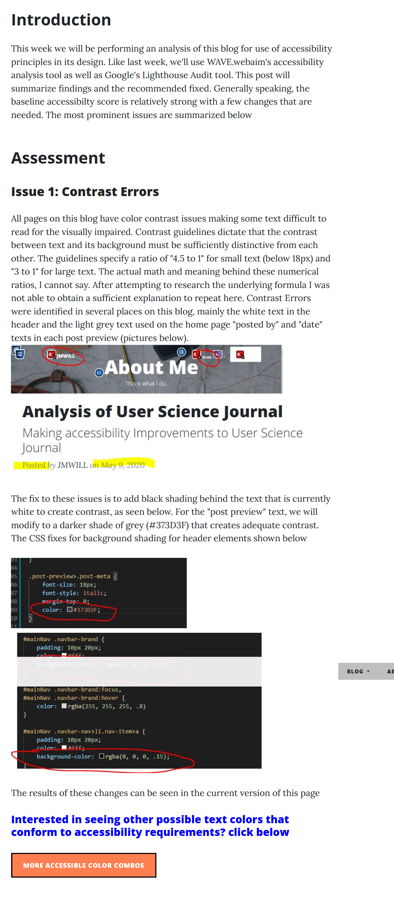
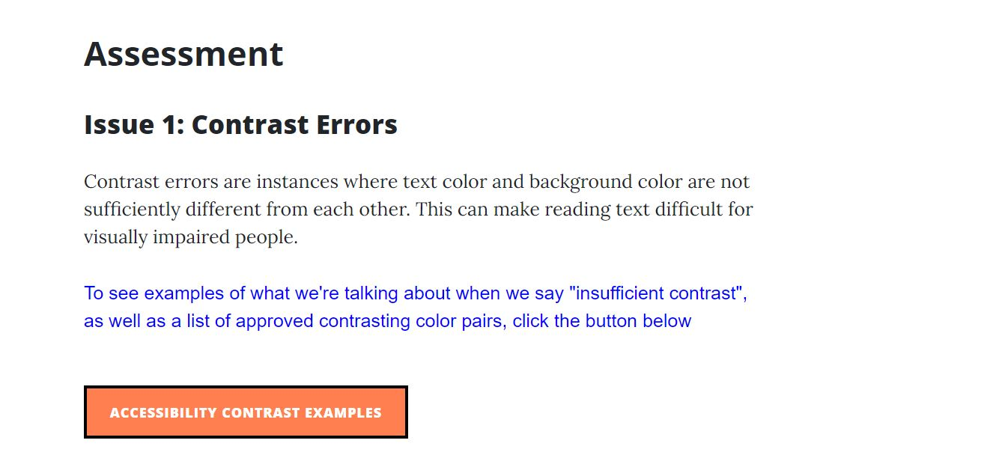
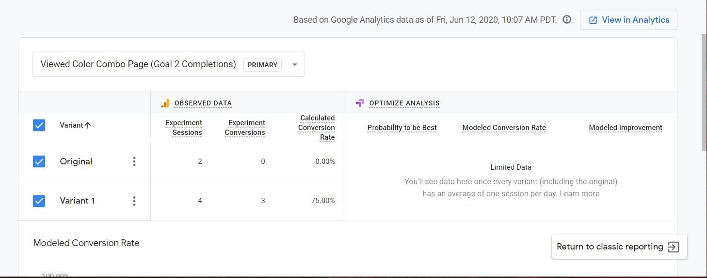

Introduction and Review of Previous Week
This week we will summarize the results of our user design experiment. To review, we are testing an alternative design to the week 6 entry on this blog. The original page has a link that offers users a chance to review color combinations that create enough contrast to be comply with accessibility requirements. This information is relevant to people with web dev experience who undrestand contrast and accessibilit, but the lay person who was asked to review the page may not find purpose in clicking the link. The original design failed to convert a single user, (0 out of 4 click the link), so clearly design changes were needed
As discussed in week 9, I set up a redirect test where users would be randomly shown a either the original page, or the new page so results could be compared.
Results of Experiment
After asking 7 people to review the page, we saw that 3 users were sent the original page, and 4 users teh new design. Similar to week 9, of the 3 users who saw the original design, nobody clicked the link. Of the 4 users who experienced teh new design, 3 clicked the link!
A quick comparison of the two designs
Baseline Page
New Design
The Google Optimize summary is pictured here
Clearly, the new design is superior in driving traffic. We have a clear winner!
Changes that Drove Results
The chief design change wasnt necessarily layout related, it was posturing the link in a way that would imply to the user that the information would be useful, ideally piquing curiosity about color contrast. The original design implied the link was optional content to further review colors and accessibility. Non-web developers who reviewed my page are most likely scanning the article as quickly as possible and not interested in clicking optional content. However, the link was placed earlier in the article content in the section of the article that discussed contrast ratios
The new text describing the link suggests that the content might be interesting. The text says that a user can see examples to better understand contrast which helps showcase why its important to accessibility. I believe that users were attracted to seeing content that would help explain the purpose of the article with visual aids, as opposed to dry text without context. I used the same orange button with prominent placement, but described it in a way that users found enticing
Next Steps
If this site were to continually upgraded, it is clear that the alternative design would become the baseline page, with the baseline page being sunsetted into the archives of this blog.
Usefulness of Google Analytics
GA is an incredibly powerful tool that is offered for free. I am incredibly impressed at what anyone with a gmail account can do with their websites. I found GA to be user friendly, however Tag Manager and Optimize less so. Both Tag Manager and Optimize, in my opinion, require more attentoin to use, but have actual user design issues that lead to incorrect links being clicked. That said, no task was more than 20 minutes of effort away from completion.
Being able to see how traffic flows through a site is an unbelievable piece of intelligence. This class has taught me that we as developers have no clue how users interact with a site. We may think something is done correctly or logically, and user data suggests otherwise. GA shows this further with funnel visualization and behavior flow.
Summary
Overall the design change was a success and a clear improvement over the original. Once again the criticality of user testing was on display. The incredibly powerful tools of Google Optimize were of great use, and I know there is much more to learn in this arena.